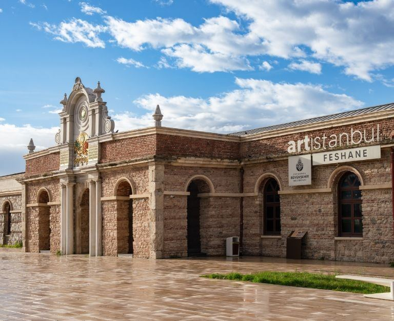

Festivals · Arts
19th Istanbul Biennial
- Dates
- –
- Venue
- Artİstanbul Feshane and other venues, Istanbul
- Location
- Istanbul, Turkey
- Format
- In-person
- Category
- Arts
- Industry
- International contemporary art biennial
- Organiser
- Istanbul Foundation for Culture and Arts (İKSV)
- Official website
- https://bienal.iksv.org/en
About
Official news also lists press and professional previews 14–17 September 2027; the public run used for this record is 18 September–14 November 2027. Curators: LIU Ding and Carol Yinghua LU. Dates are local to the host city (Turkey Time, UTC+3 year-round).
Topics: contemporary art, visual arts.
No organiser attendance figure for the 19th edition was found on the official pages fetched 24 Nov 2026. The biennial is free to the public over eight weeks at Artİstanbul Feshane and other venues. Ranked by our estimated size tier 'large' (30,000–100,000), a judgement from format and duration, not an official number.